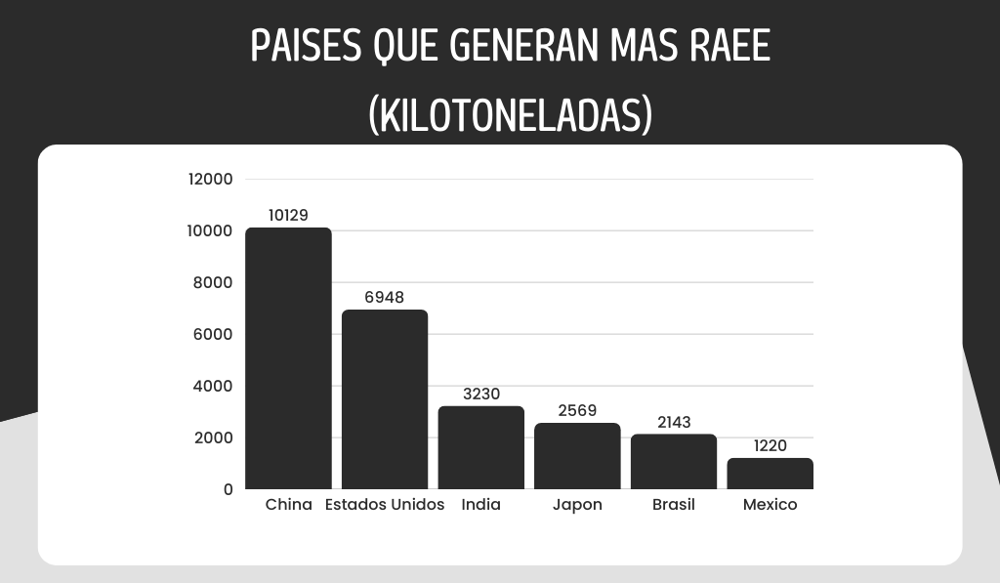

La basura electrónica, también conocida como residuos de aparatos eléctricos y electrónicos (RAEE), representa uno de los desafíos ambientales más significativos del siglo XXI. Con el avance tecnológico y el consumo masivo de dispositivos electrónicos, la generación de estos residuos ha aumentado exponencialmente, superando la capacidad de gestión adecuada en muchas regiones del mundo.
La basura electrónica comprende todos aquellos dispositivos eléctricos y electrónicos que han llegado al final de su vida útil y son desechados. Esto incluye una amplia gama de productos, desde teléfonos móviles, computadoras y electrodomésticos, hasta baterías y cables. Estos residuos contienen materiales valiosos como oro, plata y cobre, pero también sustancias peligrosas como plomo, mercurio y cadmio, que pueden causar daños al medio ambiente y a la salud humana si no se gestionan adecuadamente.
Según datos de la Unión Internacional de Telecomunicaciones y el Instituto de las Naciones Unidas para la Formación Profesional e Investigaciones (UNITAR), en 2022 se generaron aproximadamente 62 millones de toneladas de basura electrónica a nivel mundial, y se espera que esta cifra alcance los 82 millones para 2030. Sin embargo, solo el 22% de estos residuos fueron reciclados adecuadamente en 2022, y se prevé que esta proporción disminuya al 20% debido a factores como ciclos de vida más cortos de los productos y una infraestructura de gestión de residuos insuficiente.
La acumulación de basura electrónica no solo representa una pérdida de recursos valiosos, sino que también plantea riesgos significativos para el medio ambiente y la salud pública.
Un ejemplo alarmante es el vertedero de Agbogbloshie en Ghana, considerado uno de los más contaminados del mundo. Allí, trabajadores, incluidos niños, desmantelan dispositivos electrónicos sin protección adecuada, exponiéndose a sustancias tóxicas y contaminando el entorno.

Muchos países carecen de instalaciones y sistemas eficientes para la recolección, clasificación y reciclaje de RAEE. Esta deficiencia conduce a la acumulación de residuos en vertederos y al manejo informal de los mismos, lo que agrava los problemas ambientales y de salud.
En numerosas regiones, especialmente en países en desarrollo, la basura electrónica es gestionada por el sector informal, donde se utilizan métodos peligrosos como la quema al aire libre y el uso de ácidos para extraer materiales valiosos, sin considerar las implicaciones ambientales y sanitarias.
La falta de conocimiento sobre los riesgos asociados con la basura electrónica y las opciones de reciclaje disponibles contribuye a prácticas de disposición inadecuadas. Muchos consumidores desconocen cómo y dónde reciclar sus dispositivos electrónicos de manera segura.
La rápida evolución tecnológica y las estrategias de mercado que fomentan la obsolescencia programada impulsan a los consumidores a reemplazar sus dispositivos con frecuencia, aumentando la generación de RAEE.
La Responsabilidad Extendida del Productor (REP) es una política que responsabiliza a los fabricantes por la gestión de sus productos al final de su vida útil, incentivando el diseño de productos más duraderos y reciclables, así como la creación de sistemas eficientes de recolección y reciclaje. Fomentar el diseño para la desmontabilidad permite mejorar significativamente la eficiencia del reciclaje y reducir los residuos. Además, la implementación de programas de reciclaje accesibles y la oferta de incentivos, como descuentos o recompensas por la devolución de dispositivos electrónicos usados, motivan a los consumidores a participar activamente en la gestión adecuada de los Residuos de Aparatos Eléctricos y Electrónicos (RAEE). Por otro lado, lanzar campañas educativas para informar a la población sobre los riesgos de la basura electrónica y las opciones de reciclaje disponibles es crucial para cambiar comportamientos y promover prácticas sostenibles. Finalmente, invertir en la creación y mejora de instalaciones de reciclaje y sistemas de recolección fortalece la capacidad de gestión de RAEE y reduce la dependencia del manejo informal.
En Navarra, España, se recogieron 1.714 toneladas de residuos electrónicos en 2023, gestionados a través de 97 puntos limpios y un servicio de recogida domiciliaria. Este esfuerzo demuestra cómo la implementación de infraestructuras adecuadas y campañas de concienciación pueden mejorar significativamente la gestión de RAEE.
En Ahmedabad, India, la Corporación Municipal relanzó su servicio de recolección de basura electrónica, autorizando a agencias registradas para gestionar estos residuos y ofreciendo compensaciones a los residentes por su e-waste, lo que incentivó la participación ciudadana.
La basura electrónica es un problema creciente que requiere una atención urgente y acciones coordinadas a nivel global. Mediante la implementación de políticas efectivas, el desarrollo de infraestructuras adecuadas, la educación pública y la responsabilidad compartida entre productores y consumidores, es posible mitigar los impactos negativos de los RAEE y avanzar hacia una gestión más sostenible de los residuos electrónicos.